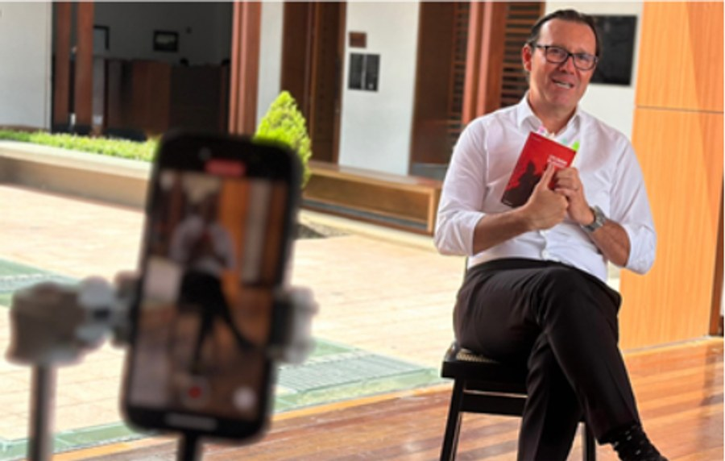
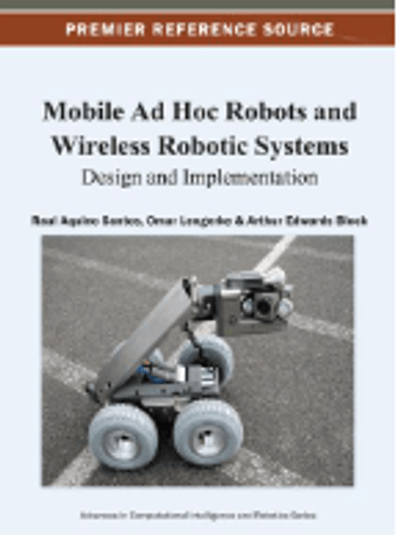
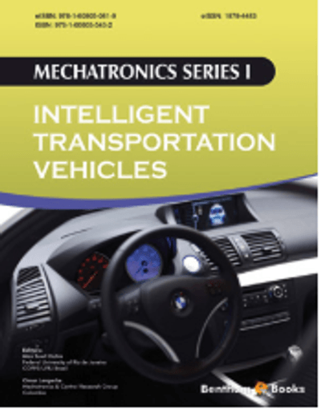

Del Socorro al mundo, y del mundo de vuelta a Santander.
Lengerke desde la Secretaría TIC trabajó para llevar conectividad a los 87 municipios y, como rector de las UTS, hizo de la educación una apuesta por el futuro. Hoy, quiere seguir aportando a su gente, poniendo su experiencia al servicio de un Santander con más oportunidades, progreso y bienestar para todos.

En una línea de tiempo
Docencia e investigación
Profesor e investigador universitario
Fue docente en varias universidades, en ingeniería mecatrónica, electrónica y de sistemas, y orientó su investigación hacia la robótica, el control y la automatización, las redes industriales, el equipo biomédico y el diseño de máquinas.
Ciencia
Investigador Senior MinCiencias
Es reconocido en el sistema nacional de ciencia y tecnología. Ha sido jurado, par evaluador, conferencista invitado y editor de libros científicos.
Servicio público · 2012–2015
Secretario TIC de la Gobernación de Santander
Fue el primer funcionario del país designado en un cargo de esta naturaleza e impulsó la conectividad de los 87 municipios del departamento por medio de fibra óptica. Además, en varias oportunidades asumió como gobernador encargado.
Rector · desde 2015
Rector de las Unidades Tecnológicas de Santander
Lideró una institución con más de 26.500 estudiantes, cerca del 97 % de estratos 1, 2 y 3. Casi doce años de una universidad cada vez más grande, acreditada y cercana al territorio.
Voz de la educación técnica y tecnológica
Representación a nivel nacional
Fue ponente ante el Congreso en el reconocimiento de las instituciones técnicas, tecnológicas y universitarias. Representó a este sector ante el CESU (2020–2024), presidió la REDTTU (2020–2022) y participó en el OCAD de Ciencia, Tecnología e Innovación.
CONOCIMIENTO · INVESTIGACIÓN · INNOVACIÓN
Una trayectoria dedicada a generar conocimiento
Su recorrido académico combina investigación científica, producción editorial y desarrollo tecnológico, con aportes en computación, ingeniería y robótica.
100+
Publicaciones científicas
En revistas científicas
21
Capítulos de libros
Producción académica
100+
Eventos científicos
En los que ha participado
Libros

Mobile Ad Hoc Robots and Wireless Robotic Systems: Design and Implementation
Robótica · Sistemas inalámbricos · Comunicación y control
Este libro aborda los fundamentos y las aplicaciones de los sistemas robóticos móviles que se comunican de forma inalámbrica. Reúne conceptos sobre redes ad hoc, comunicación y control coordinado de robots, con una mirada a las posibilidades de integración entre robótica y telecomunicaciones.

Mechatronics Series I – Intelligent Transportation Vehicles
Esta obra reúne trabajos sobre automatización y control de vehículos diseñados para distintos entornos, desde espacios urbanos e industriales hasta escenarios desconocidos o peligrosos. También explora técnicas de procesamiento de datos, algoritmos de operación y tecnologías de comunicación aplicadas al control de vehículos y al transporte inteligente.
Raíces y prospectiva: El valor estratégico de la educación técnica y tecnológica.
Educación · Formación técnica y tecnológica · Desarrollo regional
Esta obra aborda el valor estratégico de la educación técnica y tecnológica como motor de desarrollo y transformación social. Invita a reconocer la importancia de estos modelos formativos en la construcción de oportunidades, el fortalecimiento de las capacidades humanas y la preparación de las nuevas generaciones para los desafíos del futuro.
Una reflexión sobre cómo conectar la educación con las necesidades de la sociedad y reconocer en la formación técnica y tecnológica una vía para impulsar el progreso.